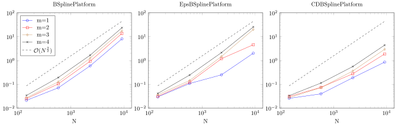

ND B-spline extension
The package provides a fast solver for multidimensional B-spline extensions such as, e.g.,
julia> P1 = ExtensionFramePlatform(NdBSplinePlatform((3,3)),(0.0..0.5)^2)
ExtensionFramePlatform(ProductPlatform{2}((BSplinePlatform{Float64,3}(), BSplinePlatform{Float64,3}())), 0.0..0.5 x 0.0..0.5)
julia> P2 = ExtensionFramePlatform(NdEpsBSplinePlatform((3,3)),(0.0..0.5)^2)
ExtensionFramePlatform(ProductPlatform{2}((EpsBSplinePlatform{Float64,3}(), EpsBSplinePlatform{Float64,3}())), 0.0..0.5 x 0.0..0.5)
julia> P3 = ExtensionFramePlatform(NdCDBSplinePlatform((3,3)),(0.0..0.5)^2)
ExtensionFramePlatform(ProductPlatform{2}((CDBSplinePlatform{Float64,3}(), CDBSplinePlatform{Float64,3}())), 0.0..0.5 x 0.0..0.5)Column truncation
In one dimensional B-spline extension approximation the nonzero columns of $A-AZ'A$ was independent of $N$. It is, however dependent on the size of the boundary of the domain. For two dimensional domains the number of nonzero rows is thus $\mathcal O(\sqrt{N})$.

Row truncation
Also the number of rows with a norm larger than epsilon is $\mathcal O(\sqrt{N})$ since the support of a B-spline is independent of $N$. In two dimension, the support is of the dual dictianary (as in P1 and P2) is quite large. This is why the growth in nonzero rows is first $\mathcal O(N)$ in the region that is displayed below in the first two panels. Eventually, the $\mathcal O(\sqrt{N})$ will be reached. For the compact dual splines the level off is reached at much lower $N$.
Multidimensional B-spline extension approximation
In this section we use the BSplineExtensionSolver](@ref) solver to approximate the function $f(x,y)=e^{x*y}$ on the square $[0,0.5]^2$ using a B-spline basis of order m on the interval $[0,1]^2$. First we show the convergence results, then the time complexity of the approximation algorithm.
Convergence
In the figure below, which shows the uniform error of approximating a 2 dimensional analytic function (details are in the introduction of this section), we see that convergence is algebraic.

Timings
For all platforms and for high $N$, the most costly part is the first step of the AZ algorithm, i.e., solving $(A-AZ'A)x=(I-AZ')b$. The system is of size $\mathcal O(n\times n) = \mathcal O(\sqrt{N}\times\sqrt{N})$, where $N$ is the total number of degrees of freedom and $n$ is the number of dof in one dimension. Therefore, solving this system and by consequence the approting a function costs $\mathcal O(n^3)=\mathcal O(N^{\frac{3}{2}})$.
For low $N$ we saw that the first two platforms are not in the regime where the size of the system of $\mathcal O(\sqrt{N}\times\sqrt{N})$, they are $\mathcal O({N}\times\sqrt{N})$. We expect to see a $\mathcal O(N^{2})$ complexity. This complexity is for small $N$ overshadowed by the $\mathcal O({N^{\tfrac{3}{2}}})$ cost of creating the system of the first AZ step.
